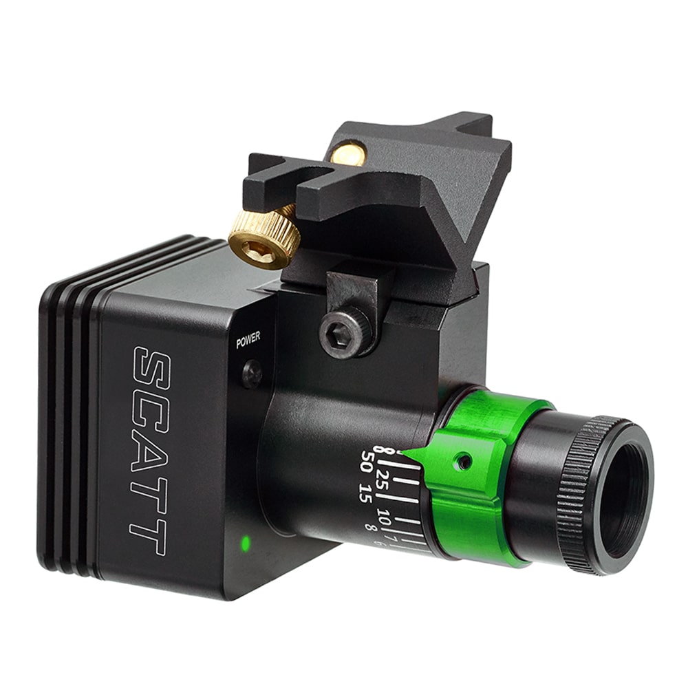
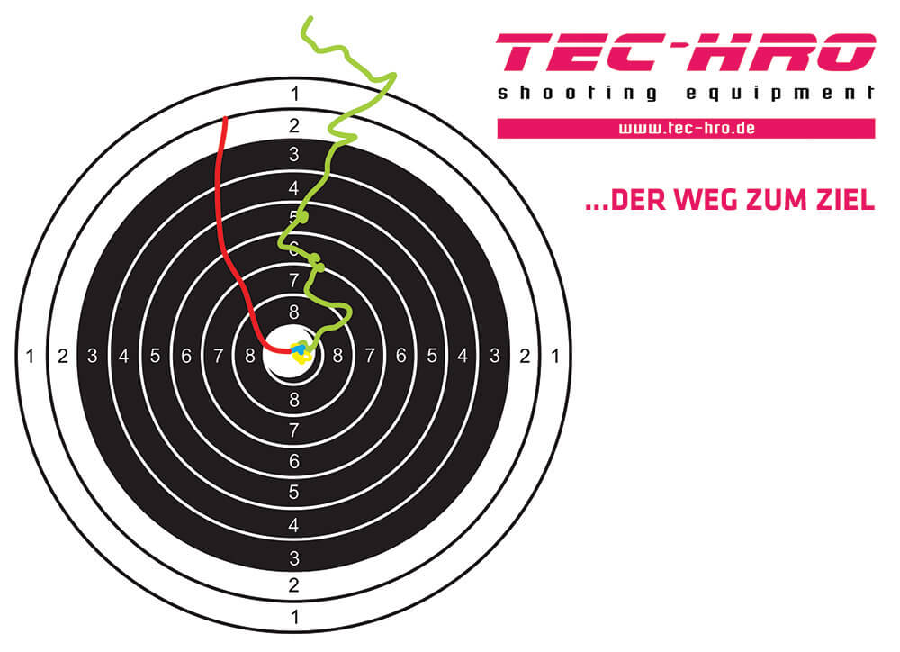

Rifle
(more ...)
Movement sequence:
To guide your movement, you can remember the 5 phases of the sequence. You should execute each shot with the utmost care and discipline. The key to every good shot lies in the constant repetition of your perfect sequence. Concentrate in the (1) preparation phase, start with an accurate (2) pre-start and pre-positioning phase, perform an accurate (3) working phase, move into a meticulous (4) trigger phase, and carefully finish the shot with the (5) post-aim and return phase.
1 Preparation Phase:
In this phase, go through your entire movement sequence or individual focal points of it mentally and highly concentrated. Breathe in and out consciously while the rifle lies still on the resting tripod. The insertion into the shoulder/upper arm area and the grasping of the grip should already have taken place at this point. Place your index finger on a comfortable spot on your rifle stock. This should be chosen so that you cannot accidentally reach the trigger. Keep your gaze in a resting position in the room./p>
2 Pre-Start and Pre-Positioning Phase:
Take a deep inhale to bring the rifle from the tripod to the positioning and, after correctly inserting your elbow at the hip, let it sink into a comfortable upper body position as you exhale. Build up your optimal basic position here and always place your index finger in the right place, on the trigger blade. If you shoot with a first stage travel, you should take the pressure point here.
With your chin resting on the cheek piece, look over the diopter and front sight tunnel towards the mirror, and check your estimate for the positioning of your rifle. The position of your rifle should be chosen so that the front ring sight is centred slightly above the mirror when looking through the diopter. Breathe calmly through your abdominal breathing and check your four control planes of the firing position and the feeling of your inner firing position.
3 Working Phase:
With a calm inhale and a conscious exhale, guide your head down the cheek piece to the exact position to look centrically through the sight. Your ring sight should now be centred over the mirror or slightly cutting the mirror from above.
Slowly and accurately guide your rifle downwards to the centre of the mirror by fixing your front sight. With calm and shallow breaths through your belly, hold the rifle and stand in the centre of the mirror with your last exhalation and a pause for breath with a small amount of air remaining. To check your optimum firing point alignment, you perform your zero check here. This requires iron discipline and must be maintained at a consistently high level of quality from the first test shot to the last evaluation shot.
4 Trigger Phase:
When you have reached the holding area and the optimum firing position, you reach the phase in which the shot is fired. Make sure that the time between reaching the holding area and the moment of firing does not exceed 8 seconds. When you have acquired your optimal target image, the shot is released without transferring any movement to your rifle.
5 Post-Aim and Return Phase:
With the trigger of your shot, another phase follows your sequence. By maintaining your body tension immediately after firing, this phase is one of the most important in your sequence. Hold your rifle for a further 2 seconds and, after the trigger reaction, carefully return it to the holding area (re-aiming). Be sure to keep your eye on the front ring sight while your trigger finger remains at the trigger blade release position. Do not release your body tension until your rifle has returned to its initial position in the holding area.
Improve technique:
In order to perfect your movements and to make mistakes visible, you have the possibility to use a SCATT training system. With this system, you can easily record all movements that you make during the aiming process. Analyse exactly where your rifle points before, during and after the shot. Through many statistical analyses, the SCATT training system shows you the correlations between individual movement patterns, the shooting result and the time course of the individual phases. SCATT helps professional shooters improve their performance and enables beginners to acquire the necessary basic shooting skills. You can also combine dry-fire training at home with the SCATT training system and visualise your dry-fire shots.
TIP:
The manufacturer TEC-HRO offers the innovative solution of the "SCATT Training System MX-W2" as well as the "SCATT MX-02" and many other accessories. With the new and improved system, you no longer need an extra measuring frame. Your paper target at a distance of at least 2.5 m is sufficient to aim at the hit display and record your training.
 Breathing:
You can use your breathing for more than just providing optimal oxygen to all your organs. In addition to supporting your shooting technique through movement control, you can also use it to influence your arousal.
Oxygen Supply:
In order for your muscles, your eyes, your brain and all your other organs to be able to work efficiently, they need sufficient oxygen, which you take in through your breathing. Chest breathing provides you with more oxygen than abdominal breathing.
In sport shooting, abdominal breathing should be the preferred method. Make sure that you inhale enough oxygen between shots by breathing deeply in and out to compensate for the deficit in oxygen intake during the sequence.
Movement Control:
Breathing can have a great influence on your movement control. You can make use of these characteristics in sport shooting. For example, you can raise your rifle by breathing in deeply and lower it precisely by breathing out calmly. A pause for breath in between brings your sequence to rest and the rifle remains in position.
Arousal Control
By using different breathing techniques you can regulate and influence your level of arousal, because emotional arousal and breathing have a strong influence on each other. For example, chest breathing has an activating effect, while abdominal breathing contributes to relaxation. Deep and calm inhalation and exhalation via abdominal breathing can thus enable you to control your arousal before each shot, as well as before and during your competition.
Exercise:
Train your breathing technique consciously by lying on the floor in a supine position and placing a book on your stomach. Breathe consciously through your belly under the weight of the book and feel the movement of the book without causing it to slide. Playing songs in different musical styles and volumes can be chosen as an external influence. As a rule, fast and loud sounds work to increase the stress level, while calm and soft sounds work to soothe. Try to consider both scenarios in your breathing training. Set aside at least 30 minutes a week for this exercise.
Aiming:
With the help of the sights and your eye, you aim the rifle at the target. You can think of a straight line between your eye and the sights of your rifle, the diopter and the front ring sight. If all three elements are in a straight line, aligned with the optimum holding area, you will hit the centre of the target with the greatest possible accuracy. Keep a distance of 4-7 cm from the aiming eye to the iris aperture on the dopter to avoid aiming errors.
Target image:
The optimum target image is obtained by an absolutely centric sighting through the diopter/iris aperture and the front ring sight tunnel with exact positioning of your head on the cheek piece. The holding position of the aligned sight is in the centre of the mirror with a white border to the ring front sight (control white). The control white between the blurred mirror and the sharp ring front sight should have a width of at least 1/3 of the white area of the target image. The more pronounced your movements are, the larger the selected ring sight should be. The optimal ring front sight sizes for air rifle are between 3.0 mm and 4.2 mm. Try out different ring grains in training and find the right one for you.
Trigger types:
Optimal triggering starts with the correct positioning of your trigger finger. Always position the first phalanx of your index finger the same way, parallel to the sight line, straight on the centre of the trigger blade, while the second phalanx does not touch your rifle.

There are two types of triggers: the direct trigger and the trigger with first stage travel. Here, the direct trigger saves you some time and power, which leads to a minimisation of errors in the first stage. However, a direct trigger also bears the risk of an undesired release of the shot if the trigger weight is set too low. The trigger with a first stage travel offers more safety and forgives the occasional mistake during the pull, for example due to nervousness. Once you have overcome the pull distance, you are directly in the trigger pull process until you reach the pressure point, which must be carried out consistently in order to avoid the danger of rupture.
Trigger techniques:
Once you have defined the type of trigger you want to use, you should take a closer look at the three trigger techniques and test them in training depending on the situation. A distinction is made between unconscious, dynamic and conscious triggering.
1. unconscious trigger pull (soft):
Slowly and evenly increase the pressure on your trigger until the shot is released. This conscious increase in pressure on the trigger is referred to as an unconscious trigger pull, as the shot will fall at some point during the pressure increase.
2. dynamic trigger pull (hard):
Increase the pressure on your trigger evenly and relatively quickly until the shot falls. This trigger technique is also known as tearing, as the shot falls relatively quickly. With this trigger technique, most trigger faults occur due to the so-called "tear".
3. deliberate trigger pull (mostly top shooters)
Increase the pressure hardness on the trigger relatively quickly to just below 100% of the trigger weight, unconsciously the trigger is overcome, depending on the situation, dynamically (hard) or unconsciously (soft).